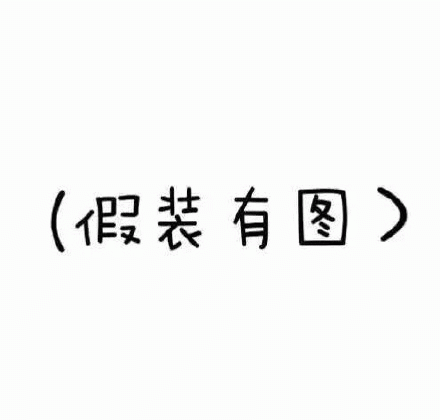

About me

我是乃霖，来自中国天津，常驻新加坡，毕业于新加坡科技与设计大学，本科是系统工程，主要研究方向是商业分析和运营研究。
我是一个ISTJ（偶尔会变成ISFJ），希望以后的我会成为一个ESTJ。
两只布偶猫的铲屎官，入职那个月给自己的礼物，他们今年4岁啦。其中一只小猫咪总是在地上拉屎，如果大家有解决方法请联系我。。
平时是非常宅的人，但是很少拒绝人，可以相约吃饭小酌玩桌游。
希望以后的我少一点拖延，也希望看到这个的大家天天开心。
Get in touch
-
我的微信
-
我的个人飞书
-

www.linkedin.com/in/nailin-zhao-190565bb